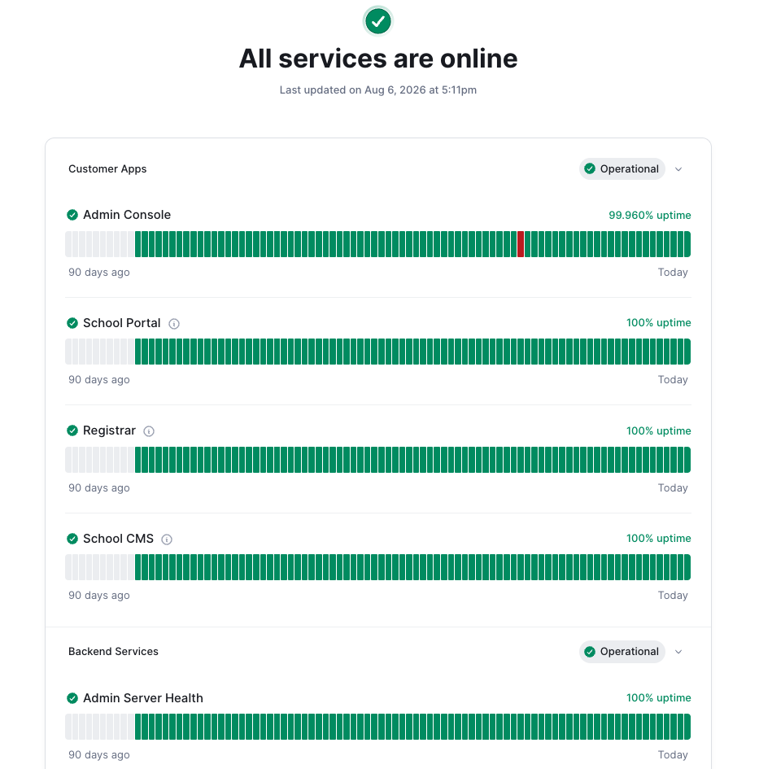
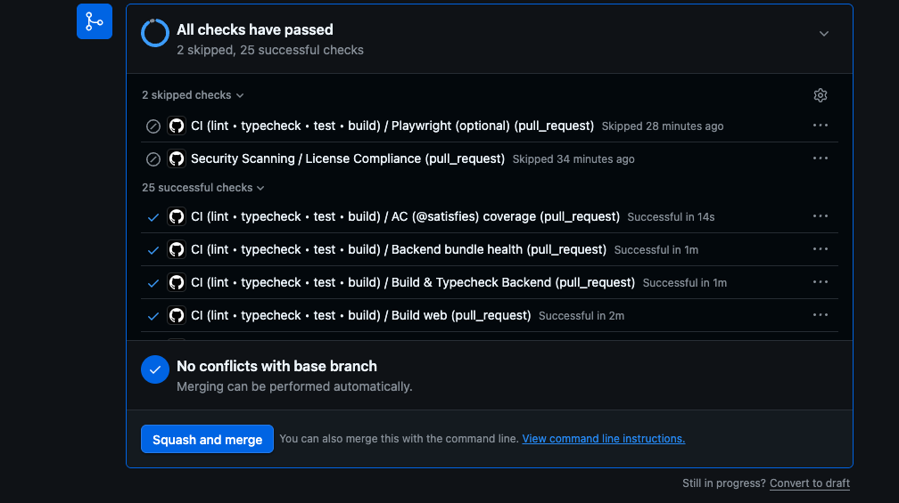
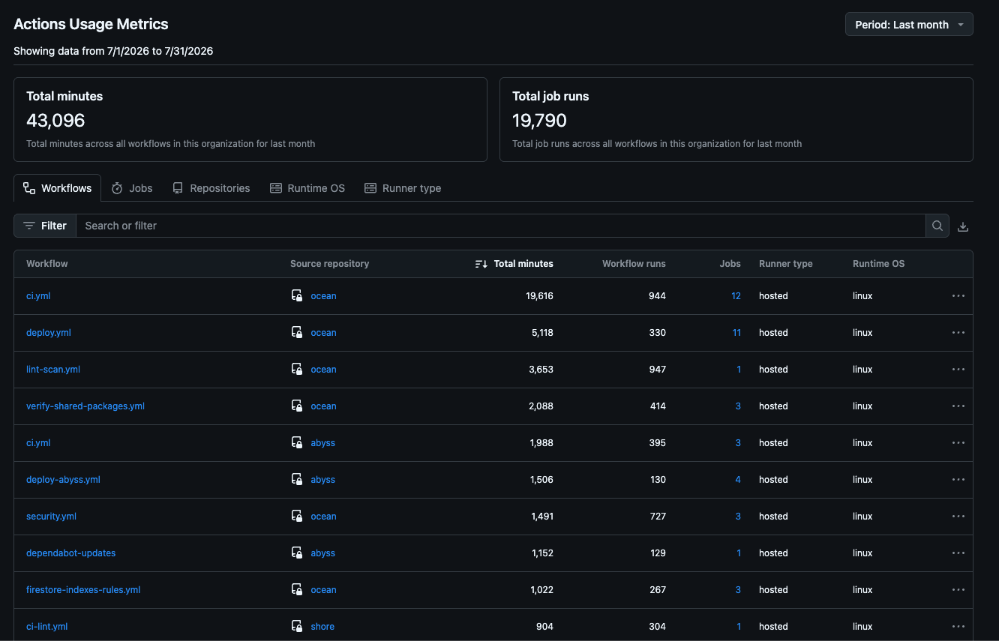
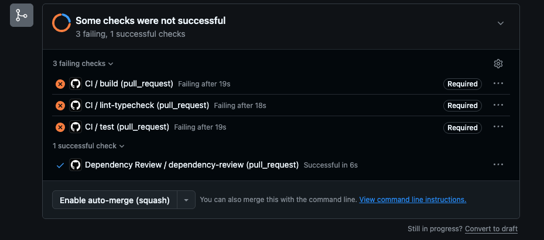
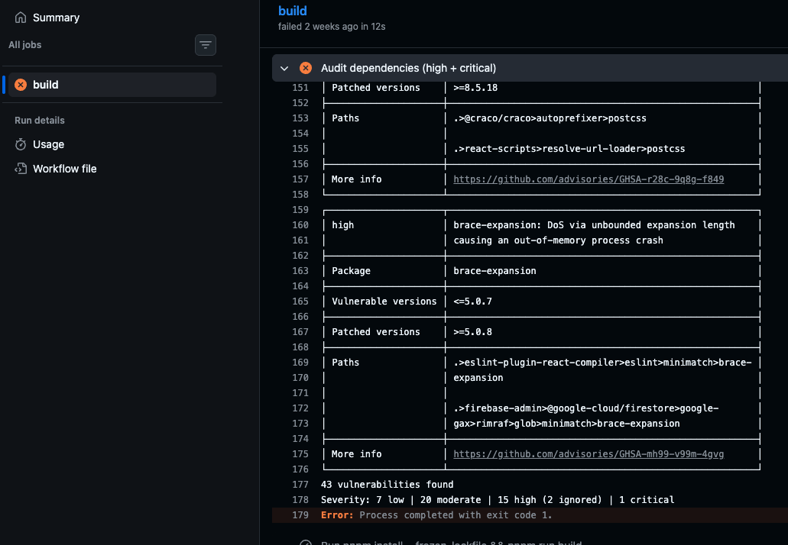
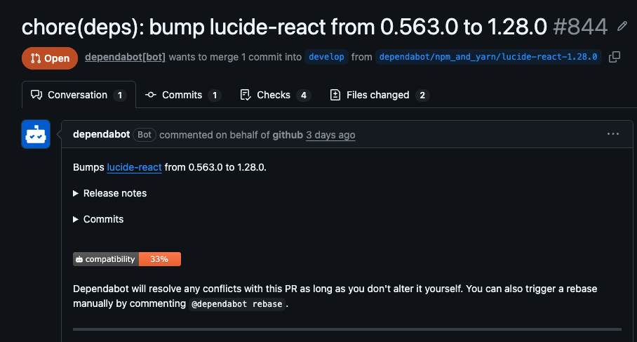
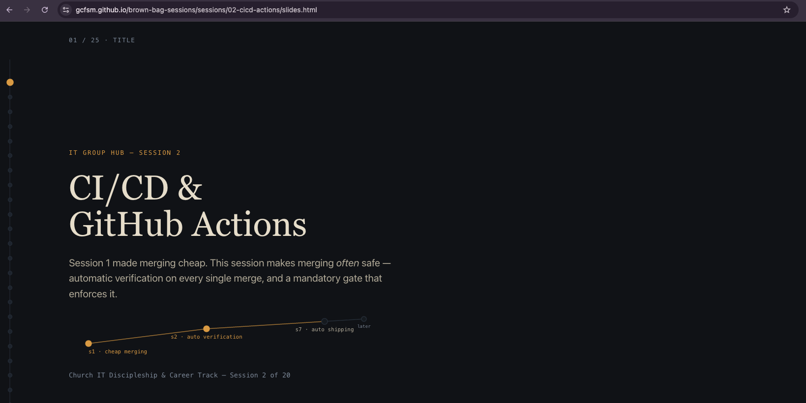

GITCom — Session 2
CI/CD &
GitHub Actions
Continuous Integration, Continuous Delivery
Session 1 made merging cheap. This session makes merging often safe — automatic verification on every single merge, and a mandatory gate that enforces it.
Scan to follow alonggcfsm.github.io/brown-bag-sessions
Church IT Discipleship & Career Track — Session 2 of 20
Quick refresh before today
Commit, push, pull, fetch — and the PR
| Verb | What it actually does |
|---|---|
git commit | Records a change locally — offline, instant, private (Session 1) |
git push | Publishes local commits to the remote — makes them visible to anyone else |
git fetch | Downloads what's new on the remote — doesn't touch your current branch |
git pull | fetch + merge, in one step — the one you've already used since Session 1 |
| PR | A pull request — asking that your branch be pulled into another. A diff, a discussion, and a merge button in one place |
fetch is the safer, two-step move — see what changed before you merge it. pull is the fast default the rest of the time.
The tools, and when each one arrives
The stack we're building with
| What it is | Where it shows up | |
|---|---|---|
| GitHub | Repos, PRs, Actions — today | Every session, from Session 1 |
| Claude | The AI pair-programming partner | Hands-on starting Session 3 |
| React | UI framework — components, props, state | Session 4 |
| Firebase | Backend — Firestore, Auth, Hosting | Sessions 6-7 |
This is the same stack idmc-gcfsm runs on.
The problem
Ten people branch Monday. Everyone merges Friday.
Each branch works fine, alone, all week. Friday, everyone merges into main at once. Now find out — together, for the first time — whether any of it actually fits.
What breaks without CI
The longer you wait to integrate, the more it costs
- 01
mainstops being trustworthy — "does it work right now?" needs a manual check - 02Cause and effect come apart — ten changes land at once; which one broke it is a mystery
- 03Feedback arrives too late to be cheap — days or weeks later, the author has moved on
- 04The team's instinct inverts — merging feels risky, so people merge less, which makes it riskier
And review can't cover the gap — nobody runs a test suite in their head.
The direct fix — coined late 1990s, Extreme Programming
Continuous Integration: merge early and often, verify every time
Merge daily
The same day work starts, not weeks later
Verify automatically
Every merge built, linted, tested — no one has to remember
Fail small
A break surfaces in minutes, on the one change that caused it
Git makes merging cheap. CI is what makes doing it constantly not reckless.
One step further — where a merge actually lands
If main always passes, shipping main can be automatic
Each long-lived branch owns an environment — its own copy, its own data, its own URL.
develop→
deploys to dev→
the team pokes at it first
develop merged into main→
deploys to prod→
users get it
Live demo: this running on idmc-gcfsm.
The same mechanism, left running
Deployed continuously. Nobody noticed.

So whose job is all this?
DevOps is a practice before it's a job title
| The ops work | What we actually do for it | |
|---|---|---|
| Pipelines | Build, test, deploy in GitHub Actions | today |
| Environments | A Firebase project each for dev and prod | S7 |
| Secrets & access | Actions secrets, IAM, service accounts | S7 |
| Monitoring | Firebase console, alerts on failures | S15 |
| Cost control | Quotas and budget alerts | S16 |
There's no server to provision — the ops work became configuration in your repo. Which is why it's yours, not a separate person's.
The other half of the Session 1 thread
A lint/test workflow doesn't care whether a human or Claude wrote the diff. It checks the result — every time.
The vocabulary that matters
Workflow, trigger, job, step, action, runner
| Term | What it means |
|---|---|
| Workflow | The whole .yml file — one automated process |
Trigger (on:) | The event that starts it — push, pull_request, a schedule, or manual |
| Job | A group of steps on one runner. Multiple jobs run in parallel by default |
| Step | One command or one reusable action, run in order inside a job |
| Action | A packaged, reusable step someone else wrote — like an npm package, but for CI steps. Not the product: GitHub Actions is the platform, an action is one step in it |
| Runner | The disposable virtual machine your job runs on — GitHub's, not yours |
checkout and setup-node aren't special — they're two of thousands of published actions on the GitHub Actions Marketplace. Deploy to Firebase, post to Slack, run a Lighthouse audit — there's very likely already an action for it.
Three verbs, in every workflow you'll write
Build, lint, test
| build | Does it compile and bundle at all? |
| lint | Is it written the way the team agreed? |
| test | Does it do what it's supposed to do? |
A 1978 Bell Labs tool, named after the fluff you take a roller to. A compiler cares whether code runs; lint picks off what's legal but shouldn't be there. Ours is ESLint.
One file: .github/workflows/ci.yml
Anatomy of a workflow
# shows up in the Actions tab name: CI on: # what triggers this push: { branches: [main] } pull_request: { branches: [main] } jobs: # parallel by default lint-and-test: runs-on: ubuntu-latest steps: # run in order - uses: actions/checkout@v4 - uses: actions/setup-node@v4 with: { node-version: '20' } - run: npm install - run: npm run lint - run: npm test
This is YAML — indentation is the syntax, not decoration. Two spaces, never tabs.
Hands-on
From zero to a check on your PR
mkdir -p .github/workflows
# save the file from the previous slide, then:
git checkout -b add-ci-workflow
git add .github/workflows/ci.yml
git commit -m "Add CI workflow: lint + test on push and PR"
git push -u origin add-ci-workflow
The PR tells you it's broken before a reviewer opens it. Once it's run on main, add a CI badge to your README.
What you just built
The check, on a real PR

Know the ceiling before you hit it
GitHub Actions free-tier limits
| Public repos | Private repos (Free) | |
|---|---|---|
| Actions minutes | Unlimited | 2,000 / month |
| Storage | Unlimited | 500 MB |
| Concurrent jobs | 20 | 20 (5 macOS) |
Linux is cheapest — macOS costs 10× the minutes, Windows 2×. A lint/test run is ~1–3 minutes.
One developer, one month
718 hours of compute

The follow-through on Session 1's note
Making the check mandatory
- □Repo → Settings → Branches → Add rule, pattern
main - □Require a pull request before merging
- □Require approvals — at least 1
- □Require status checks to pass — select
lint-and-test - □Require branches to be up to date before merging
GitHub refuses the merge until the check passes. Not discipline — mechanics.
Not discipline — refusal
Required checks, not passed

Everyone hits a red X eventually
Reading a failed Actions run
The workflow
- Click the failed check on the PR
- Into the failing job, then the failing step
- Read from the bottom up — the error is the last few lines
- Reproduce locally before pushing a fix
- Push — the PR re-runs itself
Common first-timer failures
- A YAML indentation slip — the workflow never starts, so there is no log
- Node version mismatch
- A file that works locally but was never committed
- A secret the runner doesn't have (Session 7)
- A flaky test under CI's tighter resources
Read it from the bottom
A failed run, opened up

Automatic dependency PRs
Dependabot: security alerts vs. routine bumps
version: 2
updates:
- package-ecosystem: "npm"
directory: "/"
schedule:
interval: "weekly"
| Security alert | Routine version bump | |
|---|---|---|
| Why it opened | A known CVE — a published security flaw — in a dependency | A newer version just exists |
| Urgency | Review and merge promptly | Merge when convenient, or batch |
| Safe default | CI passes + no breaking changes in the changelog → merge it | |
Slide 4 again, different problem: small and often beats big and rare.
It opens the PR for you
A Dependabot pull request

Hands-on — CI verifies a merge, this ships it
Your first deploy
on: { push: { branches: [main] } } permissions: { pages: write, id-token: write } jobs: deploy: runs-on: ubuntu-latest steps: - uses: actions/checkout@v4 - uses: actions/configure-pages@v5 - uses: actions/upload-pages-artifact@v3 with: { path: . } - uses: actions/deploy-pages@v4
Settings → Pages → Source: GitHub Actions. Then merge — no account, no secrets.
You didn't deploy anything. You merged a PR, and the deploy happened to you.
The merge shipped it
Your site, live

Hands-on — same partner as Session 1
Replay the conflict
- 1Same partner, same setup — agree on one line
- 2Both branch from
main, edit that line differently, push - 3First PR: watch lint-and-test run, merge — watch deploy fire
- 4Second PR: conflict. Resolve it together
- 5Merge the resolution — check and deploy fire again
The conflict skill didn't change since Session 1. Everything around it did.
Before next session
Homework
- □Add
.github/workflows/ci.ymlto your sandbox fork - □Open a PR, watch the check run
- □Add a CI status badge to your README
- □Turn on branch protection
- □Break a lint rule on purpose — read the failed run before fixing
- □Add
.github/dependabot.yml, read a PR it opens - □Set up
deploy.yml+ Pages, merge, watch it deploy - □If unfinished: the Full Loop replay with your partner
Next — Session 3: Vibe Coding Your First App